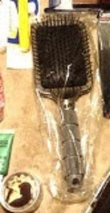
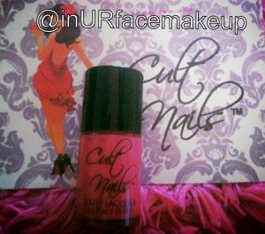
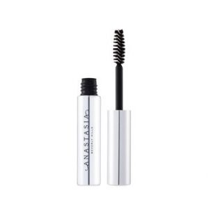

but truth be told, I got sooooo much loot at the makeup show that I wanted to be able to actually use it, and not just on myself, but on my clients, so that when I spoke to you about it, I’d actually have something to say.
So without further adieu, I give you ….. The Makeup Show LA Bloggger Bag
{kind=link}
There was so much in this “goodie bag” that I almost don’t know where to start.
I have a few favorites that I could go on and on about so I’ll leave those for last. I will say this, there are some things that I selfishly will keep in my own makeup bag that my pro-kit will never know about!!!
***to purchase all these products, just click on the underlined links below***
First up Model in a Bottle,@ModelinaBottle
{kind=link}
One of my friend Stephanie’s, (@newbeautyreview)personal favs, was generous enough to give us a Lash Builder and Eye Makeup Remover. This promises to grow my lashes, and if you remember my last post about my stubby little lashes, you’ll know how excited I am about that! The Gentle Eye Makeup Remover is wonderful because it doesn’t leave behind any residue at all, and you can apply shadow immediately after. LOVE!
{kind=link}
gave us one of their fabulous Lip Tar in Power Plant, a wild green color that reminded me that Pantone says green is this years color. Truth be told I have no idea what I am going to do with it yet, but if it’s one thing I love about OCC it’s that their makeup breaks rules so nobody says I can’t use it in a wicked editorial shoot.
Next, OFRA Makeup Fixer. @OFRACosmetics .
{kind=link}
This is amazing at holding makeup in place, just a light mist and it’s sealed even under extreme conditions. Umm…Hello all you June Brides, you’re going to need this!
{kind=link}
Crown Brushes@CrownBrush, one of my long time favorites, and best kept secrets for good quality brushes at affordable prices (why doesn’t anyone tell this to you when you’re just starting out and saving all your money for giant brush sets?) Listen up newbies, this is where you want to get them! Crown threw in some puffs, some sponges, a black eyeliner and a brush. Now I know that
I have more brushes than I can count, but in my goodie bag was my new favorite a crease blending brush, that I’m keeping all to myself!
Jouer Cosmetics
{kind=link}
@JouerCosmetics gave us a sampling of their Moisture Tints, which are perfect size to throw in my purse for when i want a little touch of color but not the look of foundation on a hot summer day, and a full size Essential Lip Enhancer.
{kind=link}
Bdellium tools@bdelliumtools
supplied us with an awesome #959s Powder Blending Brush that’s going right in my brush roll!
{kind=link}
Monda Studio gave a pack 0f 24 Eye Makeup Corrector Swabs . If you’ve never used these before, they are genius , q-tips filled with makeup remover, when you see a smudge, you snap the end, the liquid goes to the tip and viola, problem solved, no muss no fuss.

T3, was generous to throw in a $25 T3 Paddle Brush which is great at smoothing the hair into updos!
{kind=link}
Embryolisse (@EmbryolisseUSA) the company that every makeup artist is buzzing about, gave two really cool great skin treatments, that come in a disc, to pop out an ampule in just the right amount.
PRO:VITAMIN C10 is used to reduce hyper-pigmentation. Fights wrinkles and age spots.
{kind=link}
PRO:VITAMIN A15 (Retinol at 0.15%) is used for refining pores, smoothing lines, aging, and also reduces skin inflammations. Embryolisse Vitivia
{kind=link}
Senna Cosmetics (@SennaCosmetics) gave not one but three, Totally Transforming Eyeshadow Primers, in light, medium and dark. These are perfect for holding shadow on all day like a magnet and also stops it from creasing.
Cult Nails,(@CultNails) a new company on the scene threw in a Cult Nails Devious Nature.
cruelty free nail lacquer, in Devious Nature, the perfect blend of purple and pink.
{kind=link}
One of my standouts is Ellis Faas,(@ELLISFAAS). Creamy Lips 101 Lipstick in Blood Red is the most amazing Red I’ve ever worn, (sorry Russian Red) it’s pigment is beyond compare and I can only assume it has something to do with their concept to use the tones and hues that already exist in each of us.
{kind=link}
a makeup artist from Amsterdam who literally was a one woman show. A photographer, model, and makeup artist before launching her brand in 2009. When I first saw this odd shaped “bullet” and the holder which looks like the cylinder of a gun, with chambers to hold them, I thought that was what would make it so distinctive, I was wrong. Her brand is based on “human colors”, the colors that exist naturally in our bodies so they will complement all skin tones. The
{kind=link}
Another little sample pack came from Youngblood Cosmetics (@ybcosmetics) the illuminating Eye Impact Recovery Eye Cream, the Mineral Primer, which creates a smooth even surface for your makeup, & COY lipgloss which as you can see from the picture, I’ve claimed for myself.
{kind=link}
My new go-to eye pencil for smokey eyes comes from Gorgeous Cosmetics (@tweetGorgeous). A gorgeous gel liner that sets to become smudgeproof and waterproof !!!
Carbon Black iINK Liquid Eye Pencil.
{kind=link}
From my all time favorite artist Kevyn Aucoin Beauty (@kevyn_aucoin) The Liquid Patent Lip in Infernelle (Burgundy).
a super shiny patent leather look !

I knew right away that I would love this S/B Concealer Wheel from TEMPTU (@TEMPTU), it’s got basically every color I need at my fingertips. I found out the other day that the dark color looks really great when trying to cover up the puffy bags under my eyes when I don’t get enough sleep. who knew?
{kind=link}
The product that I will never be the same without again is MAKE UP FOR EVER
{kind=link}
Last but absolutely positively not least, is Anastasia Beverly Hills@anastasiasoare. This kit came with not only Clear Brow Gel,
 a Matte Highlighter, Covet Waterproof Eyeliner but also 6 shades of Anastasias signature Brow Powder Duos, Cream Brow Wax, and Concealer in the
Brow Pro Palette
{kind=link}
Shades Include:
Taupe
Golden Blonde
Medium Brown
Dark Brown
Ebony
Strawburn
{kind=link}
I’m sure I speak for all the “gingers” out there (natural or otherwise) when I say it’s nearly impossible to find a shade to match red or auburn hair, and now I have one. Strawburn is perfect for golden red tones.
I have no idea how I’ve survived so long without this palette but thankfully I wont ever need to!
This is going to be the staple in my kit!
{kind=link}
Well that’s the loot that I got in my goodie bag, there’s much more to write about, I still have to tell you about the products that I bought, and the whole TMS experience, but you’ll just have to wait for the sequel….
And just in case you are wondering why it takes so long for such a simple blog post….here’s a little glimpse into my world…..
{kind=link}
mamabird is tired…….
Night Night kiddies
xoxo
Wow lots of goodies. I even see a furry brush roll by Gypsy Sparkle in the corner!! <3 I need a good coverup for these bruises on my legs before my show this weekend. I will look into that temptu stuff. Great blog!